More than automation
Read time: 12 minutes
Company:
Babylon Health — London
My role:
Product Designer (for iOS/Android/Web)
Timeframe:
3 months
Skills:
UX/UI design and prototyping
The problem
To enrol patients into Babylon Health's GP at Hand service customer support had to manually check patient data — a time-intensive process of checking user provided data against the UK’s NHS (National Health Service) system, and updating Babylon's system to match. Automating this manual process was a cost-saving priority for Babylon, but for this to succeed the quality of user-provided address data needed to improve. As the team responsible for GP at Hand's registration flow we needed to find a way to get this better quality address data from users, so that new patient registrations had a higher chance of being automated.
TL;DR
The solution
While we succeeded in solving the business defined objective (getting better address information for automation), the real success came from embracing a more human-focused solution. This not only helped end-users avoid accidentally providing bad quality data (and in-turn helping them to register with GP at Hand on their first attempt), but it also reduced the excess workload placed on customer support — both at the registration stage, and at later stages in a users journey through Babylon’s system.
This was achieved by making the following cross-platform improvements:
- Designing a more suitable address picker component that guided users to select from an “automation ready” address list first, before using manual entry;
- Making eligibility content clearer as to why a home postcode was required; and
- Improving the clarity of the forms question interactions to reduce accidental user mistakes.

Outcomes
+10%
in successful first-time registrations
+5%
patient matches found in NHS system
~358
hours per month saved in manual processing
Read the in-depth casestudy below 🤓
A little context
Background
Babylon Health is a digital health service provider that provides video and phone GP consultations on a mobile, health monitoring and checking tools, and a symptom checker. Its most popular and well-known service is GP at Hand, which allows UK NHS (National Health Service) patients to book free video consultations with an NHS GP.
As the sole product designer in the GP at Hand registration squad, I was responsible for all design across Web, iOS, and Android. The first six months flew by; delivering on an inherited backlog, understanding the NHS system and healthcare regulations, and grasping Babylon’s many internal systems (both departmental and backend).
GP at Hand service
The GP at Hand registration journey is made up of four distinct parts:
- Introduction / Eligibility
- NHS form
- Identity check
- Application summary
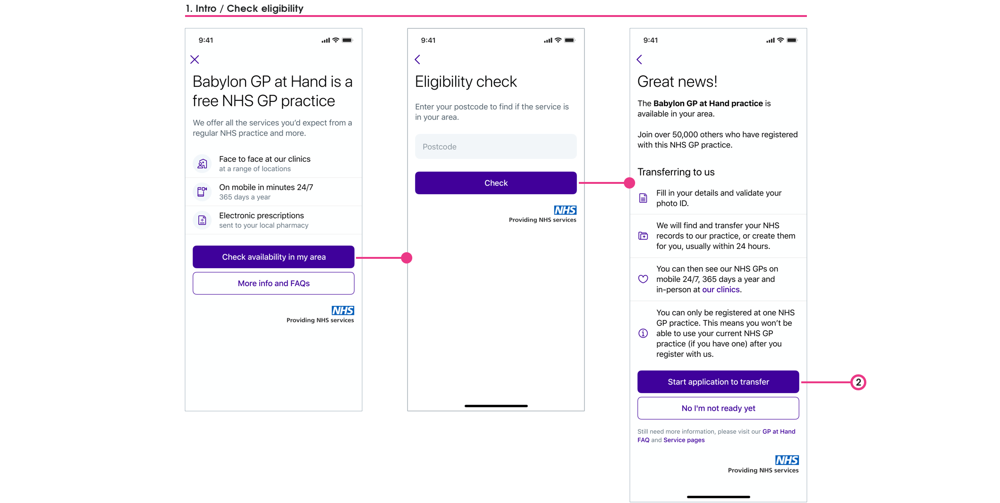
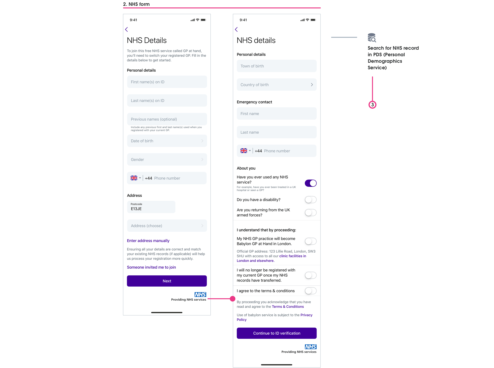
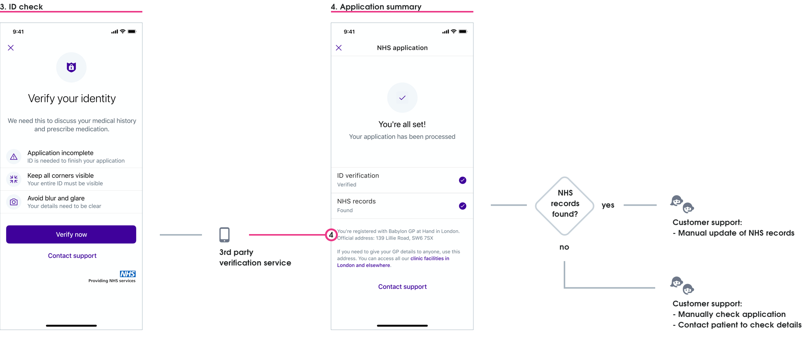
Outcome prioritisation
We spoke to various business stakeholders regarding automation impact, but by far the most enlightening sessions were with customer service. Being told how accidental user registration “errors” created extra administrative work (in addition to the current manual processing), I could see a way to reframe this problem to be a more human-focused opportunity.
THE OPPORTUNITY
Reducing the chance for users to submit incorrect data now — will lead to less errors needing customer support to rectify later.
Myself and Graeme (our PM) agreed on three project outcomes — we both saw how expanding this project's scope would further benefit customer service, users, and the business.
1. Obtain high-quality address data
This was the highest business priority — a successful automation process needed an address that was 100% accurate
2. Obtain the correct postcode data
Helping users understand we needed their current residential postcode would reduce both user-frustration and customer service work later on
3. Reduce chances for users to provide incorrect data
Making the question and answer interaction clearer would reduce incorrect data being accidentally provided.
We believed that achieving these outcomes would lead to:
- Reducing PDS (Personal Demographics Service) error rates
- Increasing first-time conversion rates from application to registration-success
- Reducing clinical safety risks and issues
- Increasing correct medical data for GP consultations and service use
- Reducing time spent by customer support having to manually contact users
We then worked together to make sure we had ways to measure our above outcome beliefs.
Asking for home postcode
Eligibility
As part of Babylon’s agreement with the NHS, only people that lived within the Greater London area could register with GP at Hand. This constraint had been rendered as an “eligibility gateway”, where users provided their postcode to find if they’re eligible for the service. This postcode was then re-used later (in a non-editable field) to show associated addresses to the user in the registration form.
This flow assumed that people would put in their home postcode, but as this had not been explicitly stated we were seeing some users providing other postcodes. This meant users were not seeing their residential address listed when asked to provide their address later — many just manually adding their address. This was leading to:
- Registrations failing as address details didn’t match any PDS records
- Customer support having to perform manual checks and contact users
- Clinical safety risks for any medical issues where a home address was needed eg. Ambulance emergency or mail correspondence
- Babylon losing money for each user who couldn’t be registered first-time
With this list of issues in front of us we realised how vital even the “small win” of making it clear to users why we needed their home postcode at this step was, and so we quickly prioritised this work to be completed, approved, and implemented within the sprint.
Clear content is king
Working with our content designer Nick, I went through four design iterations until the reason why we needed a user's home postcode became clearer. It was a careful balancing act to provide the right motivation behind the why to users, without alarming or frightening people with medical reasons.
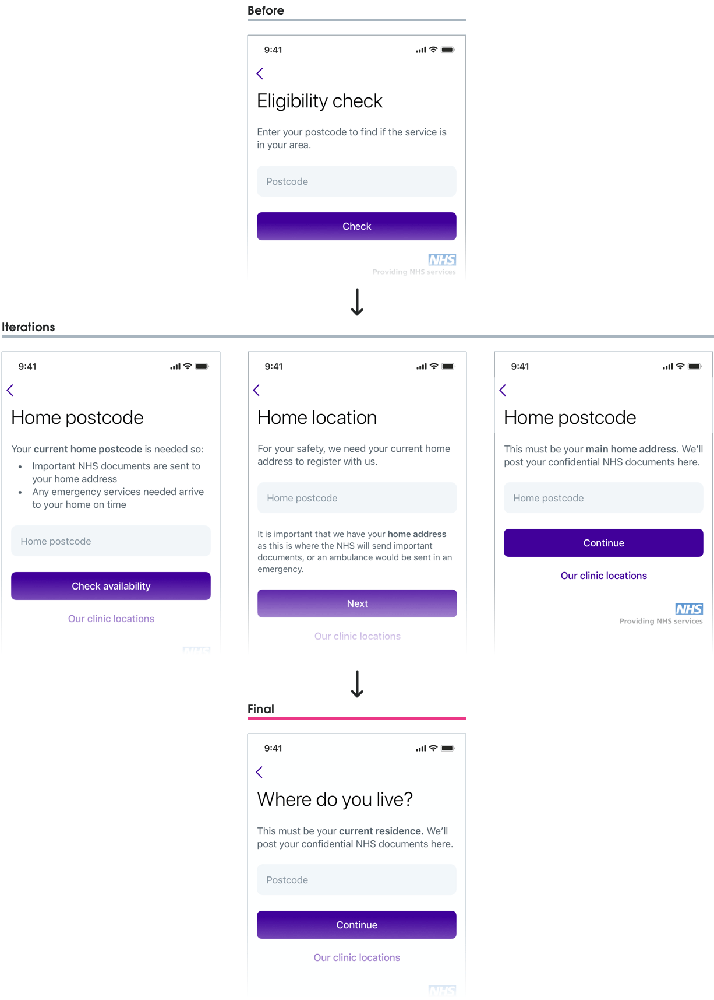
High quality data
Capturing addresses
Why the right address is so important
Patient address data collected at registration was used throughout Babylon's system, checked with 3rd party systems, and also fed back into the NHS system — this was why it was so important to capture a user's correct address — and with an automated process to be implemented the address now needed to be in an automation-ready format.
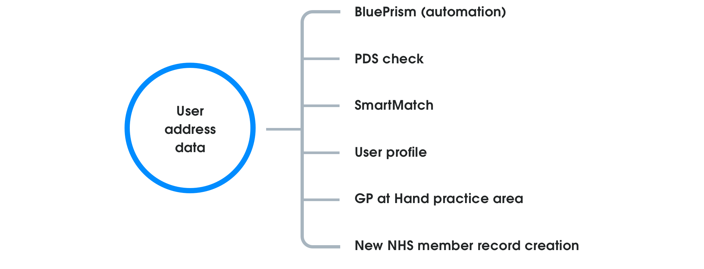
Flow logic
The current address pattern allowed users to select their address from a dropdown list, or manually enter their address — but even if the address had been selected from the dropdown, it could still be manually edited by the user! Continuing with this pattern meant we could never guarantee the supplied address would be the “high-quality address data” we needed for automation.
The BluePrism automation team proposed we remove the manual option completely — an approach I disagreed with at once as it was needed as a stress-case fallback option. My proposed solution turned the flow into a linear stepped process:
- Users were required to view an address list first
- Entering an address manually could only occur if they couldn’t find their address in the list
- An address chosen from the list could not be manually edited
Using this linear flow meant that all submitted registrations could also be assigned as:
- Automation ready: An address has been selected from the address list (considered “high-quality data”); or
- Manual process: An address has been added manually (“low-quality data”).
Probing the solution
I was aware that moving in this direction was reducing upfront choice for users and could lead to dropout for two reasons:
- Users who know, from previous online experiences, that their address is unlikely to be shown in an automated list and want to manually enter their address upfront; and
- Users not finding their address where they expect it to be in a list, and the manual option not being easily discoverable.
One way I proposed to get around this issue was to have a sticky “add address manually” button on the bottom of the address list view, but after discussion with my PM we agreed that having as few users as possible manually entering an address was the primary business need, and due to pressure from stakeholders to meet the automation deadline, we would move forward with my original solution. 😞
This was one of those tradeoffs where a business-need triumphed over my gut UX instinct. These kinds of tradeoffs don’t make you feel great, but I made sure to keep a close eye for any negative impacts by:
- Setting up address step dropout metrics
- Monitoring customer service reports
- Working with research to set up usability sessions after implementation
The native picker problem
Alongside capturing the correct address information for automation, the use of native dropdown/picker components to show addresses also needed to be re-thought.
Native dropdown/picker components are made to view values in a list, but they’re less useful when trying to show a large dataset of addresses. I needed to find a better way for users to scan:
- A long list of addresses
- Address details (street name, borough, county, postcode, etc)
- More than one line of information
All three platforms were currently using different components to show the list of addresses to users:
- Android was using a dropdown menu
- iOS was using a scroll-wheel picker
- Web was using the browsers native dropdown
I saw this as an opportunity to create a more unified and consistent address picker component for use across platforms — the perfect new addition to Babylon’s design system. 😎
Selling the change
My idea for a better way to display addresses was simple — use an overlay view. I knew that this would lead to quicker and easier address scanning, but needed to make the case to both my team, and the design-system team, as to why it was the right way to go. I concentrated on three main impact areas, and used this to successfully make my case for the change. 💪
-
Development time and effort
- Customisation of existing dropdown/picker components would take more effort than just creating a new component for our particular context
- After auditing Babylon’s digital services I could see multiple places where this component could be re-used
-
Automation goal
- The new address selection flow couldn’t be achieved using the current native dropdown/picker solution
- Improved user experience
- Easier scannability of address lists
- Better use of screen real-estate (especially on mobile)
- Allows the user to better focus on a self-contained task
- Still used platform components that were familiar to users
Cross-platform solution
Address presentation
Currently the address listings on iOS and web were shown on just one line, Android improved slightly by splitting the address over two lines. This still presented no real hierarchy to users though, so breaking the address down into primary and secondary levels of importance improved the list scannability for users.
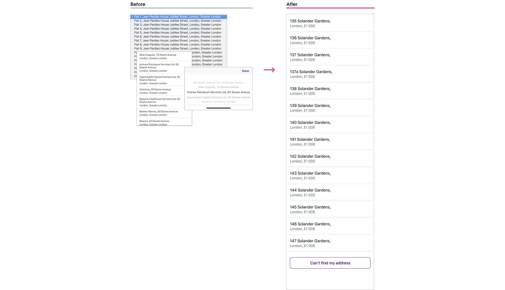
Modal behaviours
I’d always pictured in my mind that this “overlay” concept would be a modal component; the interesting question was how the modal behaviour would change across different platforms with specific guidelines.
For the iOS and Android I chose to use a partial sheet modal — partially covering the current screen UI as this still kept the address selection a part of the same registration step, avoiding the user thinking they may have moved forward in the process if a full screen modal had been used. For the web I stuck with the current design system implementation of the web modal component. The behaviour between modals on the three platforms slightly varied due to platform guidelines/constraints.
iOS: Modal view
iOS 13 and later uses the "card" modal view, but I wanted to keep a similar "card" style for those using pre-iOS 13 devices. I did this by having the fullscreen modal stop just below the status bar.
Android: Modal bottom sheet
Android’s modal sheet covered the bottom 50% of the screen for easier reachability, and would move to a full screen view once the user started to scroll the list.
Web: Current modal behaviour kept
Desktop users would see a scrollable modal window, and mobile users would see a full screen modal (these were both current design system components).
Final UI
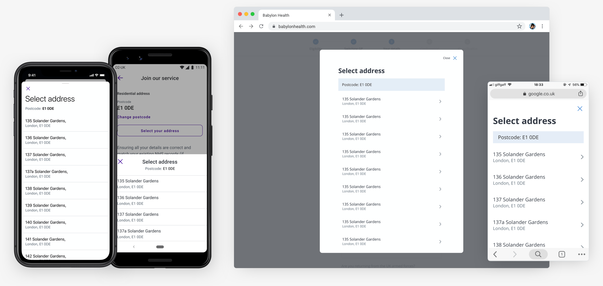
Another use-case emerges 😰
Towards the end of this project I discovered that this new address picker would also need to be used in our apps User profile section. I had to come up with a solution that scaled the use of our GP at Hand address picker component to be used in another context — without creating too much extra work for our developers.
For the user profile the address picker component needed to allow for:
- Postcode entry and editing
- Address list changing based on this “in the moment” postcode editing
- Additional error states and flows that were now needed
The user profile area was like the wild west of the Babylon app — it had no dedicated team, pre-dated Babylon’s design system, and any team wanting to touch it would have extra work on their hands. Even with all of this though, as a team, we knew that this change needed to happen, and we would just need to take the additional scope on the chin.
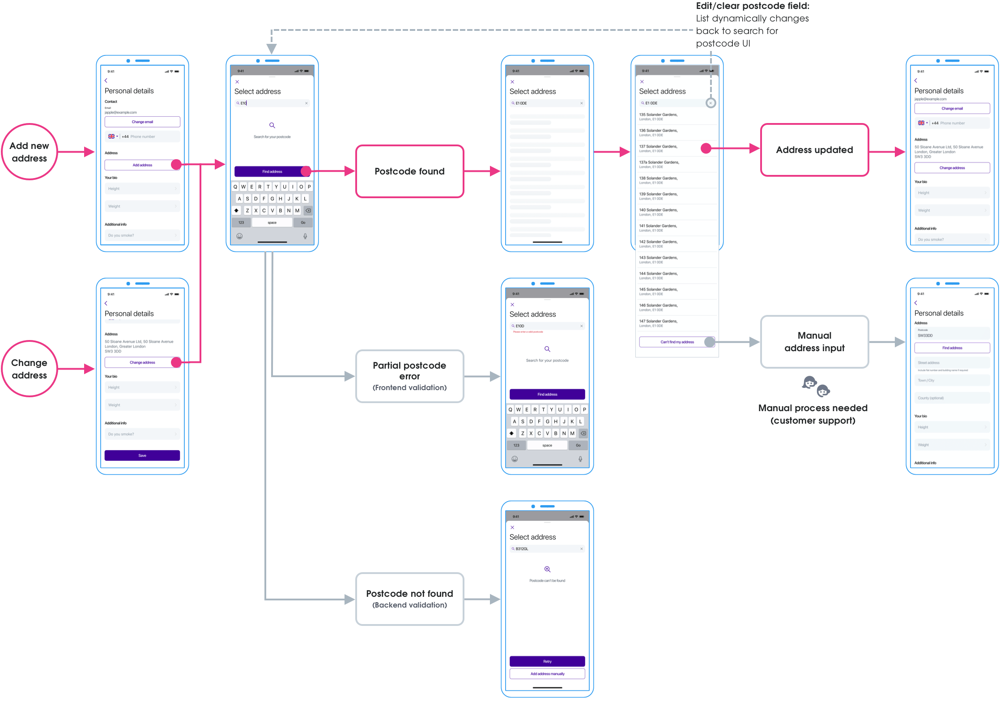
As a designer I prefer to work with as many of the use-cases in mind to be able to design the best solution. In this case though, I was having to work from the GP at Hand solution up to the more complicated use case. I would have preferred to have worked backwards from the complicated problem first, but sometimes the work you do isn’t lined up the way you’d like. 🤷
Final UI
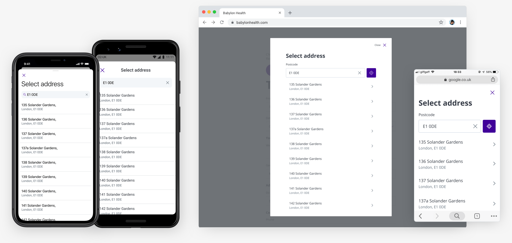
That extra mile
Better question interaction
By prioritising a better question/answer interaction we felt we could greatly reduce clinical risk and customer service workload.
The old question/answer interaction led to some users accidentally mis-answering questions with the default setting of “No”, meaning a user's medical, health, and administrative experience could be jeopardised. For instance a current NHS patient could accidentally mis-answer the question: “Have you ever used the NHS?” with a default “No”, and a new NHS record is created (in addition to their existing one) — now a patient clinical risk has emerged as they have two NHS records with incomplete medical histories.
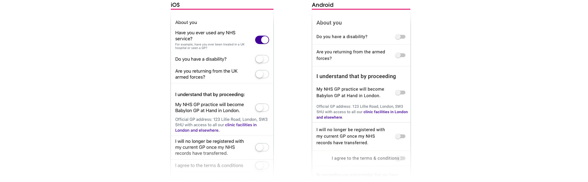
Default is not the answer
By using a switch component to answer questions, we literally only had two answer states for the user: Yes and No (or On and Off). Using a default answer increased the possibility of users accidentally skipping questions as it had already been answered with a default.
Default options are usually used to reduce cognitive load and guide with a suggestion, but in this case we wanted users to stop, and intentionally select Yes or No to each question — these questions were too important to be left to a default value. An additional state that specified “No answer selected yet” was needed.
Auditing the current component library
I undertook an audit of our existing component libraries and discovered that we used radio buttons on the web, but we did not explicitly use them anywhere on the native iOS and Android platforms. With the need to “move fast” in Babylon’s history, anywhere a radio button or checkbox should have been used, a switch component had been considered acceptable instead.
For this particular use case I felt a bespoke radio button was the best way forward. There were a number of reasons to justify this decision:
- A “not answered yet” state would be clear to the user
- Radio button behaviour was familiar and recognisable
- A consistent radio button component could be integrated into the design system for for use across all platforms
I started to visually explore this new interaction using existing design system components, and then took the proposed designs and justifications to our weekly design system critique — and subsequently given the okay for implementation. 🎉
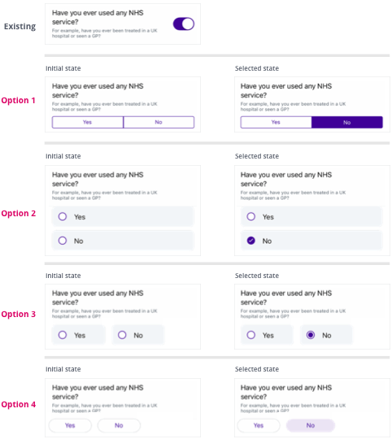
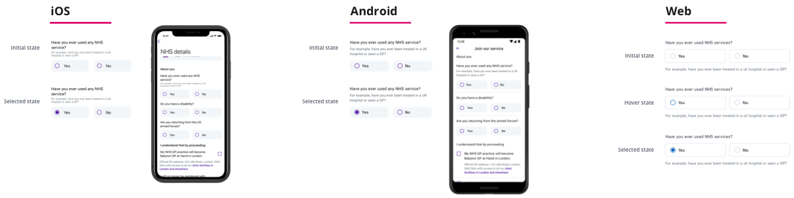
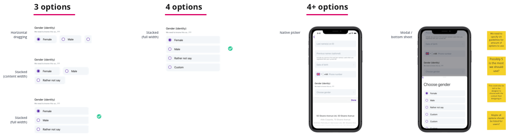
Final UI
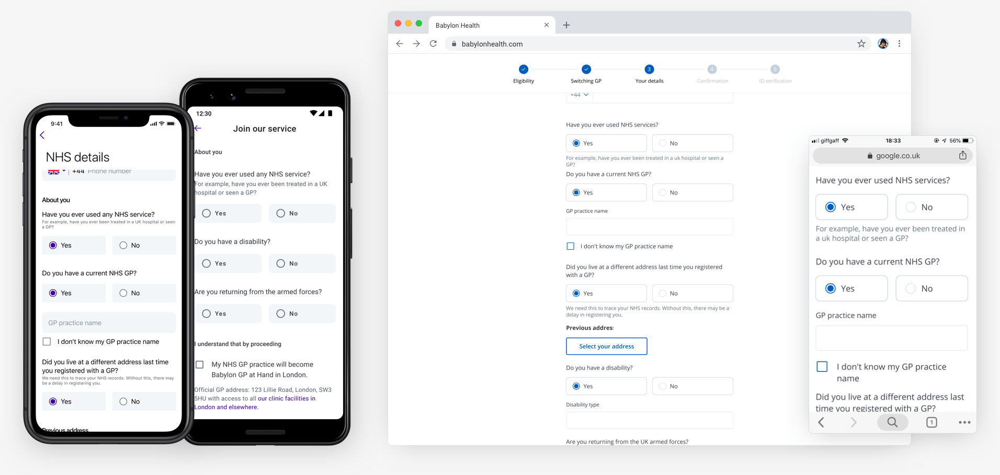
Reflections
Positive reframing
The most gratifying part of this project was my team making the concerted effort to prioritise work that positively impacted both end-users and customer support. Taking the time to collaborate with customer service, and reframing the problem from “how do we get better data for automation?” (a very machine and business centered problem) to “how do we help people register faster to use our service?” made this project so much bigger (and more human?) than just being about automation.
Moving fast drawbacks
One of the values at Babylon Health was “move fast”, and I saw first hand how this value led to rushed solutions and an expectation that fast was good enough. I sadly wasn’t immune to this cultural trait either, and there are two parts of my solution that would have benefited with better long-term thinking.
1. Understanding different use-cases
My fixation with getting GP at Hand ready for automation within a tight deadline stopped me from clearly seeing how the solution would translate to the User profiles section. Looking back this was a mistake, a clearer picture would have emerged of the different address picker scenarios with a proper investigation. This would have cut down on the extra design and development time needed to re-examine and redo the underlying structure of the GP at Hand address component later.
2. Familiarity vs linearity
Was changing the address pattern to follow a more linear flow the right way to go? Should I have pushed back stronger against this direction once I had doubts about it? I believe there were better options to explore — that met both the needs of users and automation — rather than influencing user behaviour based solely on the needs of automation. A linear approach can work, but this was a time where a user’s familiarity with choice was needed I believe.
This is the dilemma of “moving fast” — the breadth to explore ideas, and negative impacts, can be pushed aside. I’ve come to appreciate that to move fast, the right way, you need to have a solid design process that has:
- Accessibility and inclusive thinking from the start;
- Strong design principles;
- Early sharing of work and early user-testing; and
- Outside perspectives gathered to avoid bias.